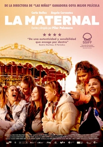

La maternal
Dos adolescentes, Carla y Efraín, ríen, tumbados en una cama al ver las imposibles posturas de los videos pornográficos.
Beben luego los restos de una botella de licor, y la chica, ya borracha, lanza la botella contra el cristal de la casa, comenzando luego a tirar copas, lanzándoselas entre ellos, tirando luego la televisión, sobre la que saltan, antes de salir corriendo, atravesando una alambrada por la que entraron, corriendo con sus bicicletas.
Se reúnen luego con otro grupo de chicos con los que juegan al fútbol, enfadándose mucho Carla cuando otro de los chicos golpea a su amigo de forma muy dura, llamándola otro de los chicos puta por su forma de actuar.
Cuando regresa a su casa, un restaurante de carretera, la encuentra cerrada, saliendo poco después su madre con su novio, al que llama Chispas, con el que queda para esa noche.
De hecho, antes de salir se arregla mucho y le pide a su hija que le ayude a hacerse una foto para Instagram.
Al día siguiente, cuando Carla se despierta ve que no está su madre y friega el suelo del bar antes de llamarla, aunque le salta el contestador, y cuando llega la madre la encuentra bailando y la abofetea.
Penélope llega con Asun, una trabajadora social que le dice que lo que hicieron en la casa en que se colaron no es una gamberrada, sino un delito, aunque si asumen la reparación de los destrozos, que son más de 1.000 Euros no la denunciarán.
Asun le recuerda también que lleva varios días sin ir al instituto, diciendo Penélope que es porque lleva varios días vomitando, aunque no fueron al médico, recordándole Asun que pueden volver a separarlas.
Penélope trata de echarle la culpa a su amigo, pero Carla lo niega.
Asun le pregunta si dejó a su hija sola en casa, aunque Penélope lo niega, y dice que Carla es mentirosa, enzarzándose en una discusión en la que Carla le pide a su madre que le cuente lo de la inspección, comentando que le van a quitar el restaurante.
Finalmente Asun, la lleva al centro de salud, donde la examinan y le hacen análisis antes de volver a la casa.
Cuando llegan, la niña parece muy disgustada y sale corriendo con la bicicleta sin contarle nada a su madre, que trata de que le cuenten lo que le dijeron.
Unos días más tarde acaba en un centro de acogida para embarazadas adolescentes de Barcelona.
Allí le ponen al cargo de Karol, una de las tutoras, que junto con Rubén, otro de los tutores, le explican las normas de convivencia, presentándole más tarde a sus compañeras, que se van presentando.
Como Estel, que se quedó embarazada con 14 años y a la que, a su pareja le dio una paliza 4 días después de haber parido.
Jamila cuenta que comenzó una relación con 13 años y el novio la maltrató siempre, aunque lo peor fue cuando se enteró de que estaba embarazada, y con 5 meses de embarazo le dio un puñetazo en la barriga para que la niña no naciera y al hacerle la ecografía le vieron hematomas y el hospital denunció al agresor.
Sheila le cuenta que viene de otro centro. Estuvo 3 años en un hospital tras un intento de suicidio. Se centró en ir al gimnasio para adelgazar, pero su novio le decía que iba allí para acostarse con otros y tuvo que dejar el gimnasio.
Como estaba muy mal volvió a ingresar y dejó a su novio, pero enn el hospital vieron que estaba embarazada.
Raki, de 16 años, cuenta que cuando tenía 9 años su tío abusó de ella. En el cole hablaron sobre el tema y se dio cuenta de que lo que ocurría no era bueno y se lo contó a la profesora y esta se lo contó a su madre y su tía que no la creyeron y su tía la abofeteó y la llamó mentirosa y nadie la creyó. Ella misma acabó diciendo que se lo había inventado y se empezó a drogar, robó las joyas de su madre y se fue a Zaragoza donde empezó a trabajar con su novio.
La policía fue a buscarla y vieron que estaba embarazada.
Claudia, otra chica, dominicana, llegó con 11 años a España y conoció a su padre. Pero como apenas se conocían, chocaban a menudo.
Con 15 años conoció a su pareja y varios meses después se quedó embarazada.
Se despertó llena de sangre. No se hablaba con su padre pero fue él quien se puso en contacto con un centro de menores, aunque ella vio que no era lugar para una embarazada, por lo que se fue, y a la semana la llevaron a la maternal.
Todos se emocionan al escuchar las historias de las demás y lloran.
Raki, su compañera de cuarto le pregunta si su novio sabe que está embarazada, diciendo ella que no es su novio, sino su mejor amigo, pero no se lo quiere decir.
Le pregunta también por qué la separaron de su madre, aunque ella dice que no lo sabe, pidiéndole la compañera que la deje tumbarse con ella, dejando que toque su tripa, ya de 7 meses, contándole Carla que ella está de 5.
En el centro conviven las chicas con los bebés que ya tuvieron algunas de ellas.
Cuando va a visitarla su madre, ella se enfada al ver que va con el Chispas, por lo que le pide que se vaya, diciendo su madre que entonces no volverá.
Tiempo después va con sus compañeras al parque de atracciones, empeñándose en subir a los coches de choque como las compañeras que ya tuvieron a sus hijos, pero está ya con mucha tripa y Karol se lo impide, por lo que se enfada con ella.
Allí Raki rompe aguas.
Regresa poco después, ya con el niño, al que le dan su primer baño.
Ve a su compañera enfadada cuando el bebé llora toda la noche, debiendo ayudarla el tutor, que le explica que si ella está nerviosa pone nervioso al niño, al que deja con el tutor para irse ella a tumbar, desesperada.
Carla se queja de que, desde que Raki tuvo al bebé, no le hace caso alguno, diciendo sus otras compañeras que ya lo tienen más crecido que es normal, pues con el niño apenas queda tiempo para nada más.
En la compra ve cómo la miran raro al verla embarazada tan joven y se enfada con la dependienta, a la que le pide de malas maneras que no la mire.
Vuelve a verla su madre, que le cuenta que en el pueblo piensan que está en el reformatorio, recordándole ella que es un centro de acogida.
Le pregunta si duele parir, diciéndole su madre que es el peor dolor del mundo, pues ella no quería salir y la tuvo que cuidar ella sola porque su madre acababa de morir y su padre parecía como si la cosa no fuera con él.
Tiene intención de escribir a Efraín, pero decide no hacerlo, aunque, cuando finalmente tiene a su bebé, le llama Efraín.
La ayudan a bañarlo, aunque ella no se deja ayudar casi nunca.
Le hablan sus compañeras de otra chica que estuvo allí antes y que no se hizo con el bebé y lo dio en adopción.
Hay momentos difíciles en que el niño no para de llorar y se ponen nerviosa con los consejos que le dan las demás, y le cuesta dejar que la ayuden, aunque está agotada.
Sale de compras con su madre y con el bebé, al que toman por su hermanito.
Se queja de que no puede dormir por los lloros, y su madre le recuerda que a ella tampoco le dejaba dormir ella, más que cuando le daba el pecho o le cantaba canciones de Estopa.
La animan a salir con sus compañeras, aunque siempre le cuesta dejarse ayudar.
Practican pasos de baile, preguntándole las otras chicas por qué se le da tan bien el baile, contándoles que se pasa la vida bailando y que tiene muchos seguidores en Instagram.
Les cuenta que su embarazo fue por error, que no la obligó su amigo, fue solo un error.
En el grupo de chicas algunas dicen que habrían abortado si hubieran podido, aunque otras, pese a que pudieron decidieron seguir adelante.
El cuidado de Efraín se le hace cada vez más complicado y recurre a menudo a Karol, pues tiene la impresión de que no deja de llorar, y se queja de que no la deja dormir.
Vuelve a salir con su madre y se muestran las cicatrices de sus respectivas cesáreas.
Su madre le dice que cuando regrese a casa tendrá que ir al instituto todos los días y recuerda que a ella le habría gustado seguir estudiando enfermería o algo así y le dice que no permita que nadie la haga sentirse inferior.
Pero Carla vuelve a enfadarse cuando ve que habla por teléfono con el "Chispas".
Pese a todo Penélope acude a la fiesta que hacen en el centro con las familias, sintiéndose contenta al ver que acude.
En la fiesta comen y luego bailan, animando a su madre a que lo haga con ella, cantando y bailando al ritmo de Estopa contentas.
Le cuenta luego su madre que tiene ya un comprador para el restaurante, y les vendrá muy bien para el expediente, aunque ella dice que puede quedarse allí hasta los 18 si quiere, preguntándole su madre si es por el Chispas, diciendo ella que no, indicándole su madre que ya no se puede echar atrás, porque le dieron una señal.
Ella sigue haciendo sus bailes y poniendo la música a todo volumen para no escuchar el llanto del bebé y se niega a cogerlo, pidiéndole a Karol que lo coja ella, sintiendo a ratos desesperación.
El viernes algunas de sus compañeras salen, y ella se pinta y se peina como ellas para salir, pero Karol le dice que no podrá hacerlo porque su hijo tiene un poco de fiebre y debe quedarse con él, aunque ella suplica que le dejen salir, enfadándose al no poder hacerlo.
Pese a todo, cuando el niño se duerme, ella decide marcharse y se reúne con sus amigas, quedando una de ellas con un chico, y cuando llega la hora de regresar todas se vuelven, pero ella decide quedarse.
Vaga sin sentido cuando cierran todos los puestos del mercado, donde estaban, ignorando el teléfono cuando suena.
Cuando ya cansada decide regresar, encuentra a Karol muy preocupada, de que no le cogiera el teléfono, y le dice que Efraín lleva llorando toda la tarde, porque le necesita.
Llora angustiada, con un ataque de ansiedad, por lo que llaman a los tutores, debiendo calmarla Rubén.
Luego le dice a su madre, llorando, que el niño no la quiere, pues le hace de todo, cantarle, bailar o bañarlo y sigue llorando, y cuando lo coge Karol no llora, por lo que piensa que el niño no quiere que sea su madre y que siempre debe estar pendiente de él y no puede salir con las chicas.
Cuenta que le canta, pero no le gusta, y le pide a su madre que le cante a ella un trocito, lo que la calma.
Regresa, para pasar el fin de semana con su madre, llevándola Asun, que dice que Irá a buscarla el domingo a las 6 para que regrese a la maternal.
Puede conocer el piso donde vive ahora su madre, y regresan también al restaurante, la que fue su casa hasta unos meses antes, que deben dejar ya para siempre.
Parece entender el dolor de su madre, mientras se alejan, y le pregunta ella si no va a ir a ver a su amigo, diciendo ella que no, aunque luego se acerca con su bicicleta al lugar donde los chicos juegan al fútbol y los observa desde lejos con una sonrisa antes de marcharse de nuevo sin acercarse.
Recorre de nuevo con su bicicleta el camino que hacía con su amigo, y por un momento ve cómo pedalean juntos, aunque en realidad está sola recordando aquellos momentos de inocencia que ya ha dejado atrás.